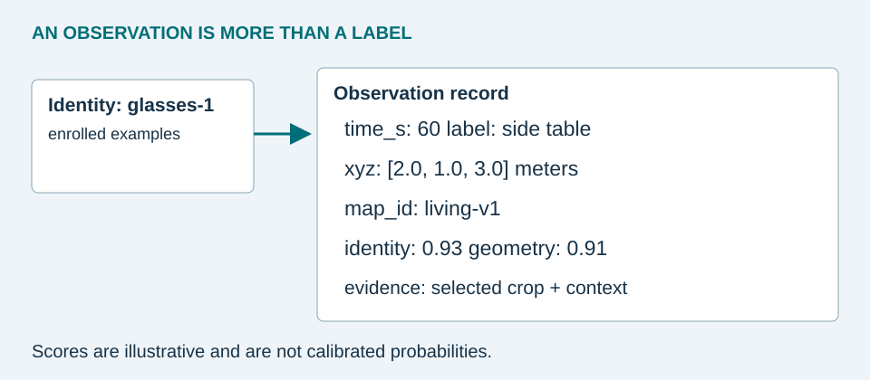

From pixels to an observation
- Detect: estimate a category and bounding box. A segmentation mask can exclude background when extracting depth or visual features.
- Associate nearby frames: combine overlap, motion prediction, and appearance to continue a track. Intersection over union is intersection area divided by union area.
- Match an identity: compare the crop with enrolled examples. L2-normalize feature vectors, then use their dot product as cosine similarity. A high score means similar features, not a calibrated probability of identity.
- Validate geometry: accept metric coordinates only when depth and pose pass quality checks.
- Store an episode: retain the identity, timestamp, evidence crop, map version, position, and quality metadata.
A tracker maintains short-term continuity. Re-identification reconnects observations after a gap. If two candidates have nearly equal similarity, ask the user to select an example rather than merge their histories. A track ID from a tracker is not automatically a persistent personal-object ID.
How this compares with other work. CocoFormer answers a query by reprocessing a recorded video, scoring proposals against the query after capture. [2] ESOM separates memory population from retrieval so a query searches a memory that was built while frames arrived. [3] The update function below follows the streaming idea but keeps one accepted record per object rather than a full searchable history. It is cheaper to store and easier to inspect, and it cannot answer a query about an object that was never enrolled. Choose retrospective search when queries are unknown during capture and footage retention is acceptable; choose streaming, enrolled memory when the object set is small and storage must stay bounded.


A minimal executable memory
This original Python example implements update and retrieval after upstream perception has supplied an identity and position. It stores one accepted record per object. It deliberately does not implement a detector or reproduce a research model. Download memory.py and run python3 memory.py with Python 3.9 or later.
from dataclasses import dataclass
from math import sqrt
@dataclass(frozen=True)
class Observation:
object_id: str
time_s: int
map_id: str
xyz: tuple[float, float, float]
identity: float # illustrative score, not probability
geometry: float # illustrative score, not probability
label: str
def remember(memory, obs):
if min(obs.identity, obs.geometry) < 0.80:
return False
old = memory.get(obs.object_id)
if old is None or obs.time_s > old.time_s:
memory[obs.object_id] = obs
return True
return False
def retrieve(memory, object_id, now_s, map_id, camera_xyz,
relocalized=True, max_age_s=1800):
obs = memory.get(object_id)
if obs is None:
return {"status": "unknown"}
result = {"last_seen": obs.label, "time_s": obs.time_s}
if now_s < obs.time_s:
return dict(result, status="clock_error")
if now_s - obs.time_s > max_age_s:
return dict(result, status="stale")
if not relocalized or obs.map_id != map_id:
return dict(result, status="relocalize")
delta = tuple(p - c for p, c in zip(obs.xyz, camera_xyz))
distance = sqrt(sum(v*v for v in delta))
return dict(result, status="last_seen", delta=delta,
distance_m=round(distance, 2))
Why these conditions matter
The update rejects weak evidence and out-of-order observations. The query returns a status before exposing geometry: unknown identity, invalid clock, stale memory, or missing alignment. A timestamp must use a consistent clock across sessions. The example returns a 3.61 m straight-line displacement for the supplied observation. That value is neither an obstacle-free path nor proof the glasses remain there.
The 0.80 threshold and 30-minute age limit are teaching parameters. Tune them on held-out data for your chosen model and use case. Detection, identity, geometry, and recency scores are correlated, so multiplying them does not automatically produce a probability.
What a fuller implementation needs
Use transactional storage such as a local database, bounded episode history, and separately tracked uncertain sightings. If a weak new observation conflicts with an old one, mark the old memory as potentially superseded; do not silently present it as current. Keep both hypotheses until the identity is resolved. Store timestamps and map versions with evidence crops so failures can be diagnosed.
For N enrolled objects and d-dimensional embeddings, brute-force matching costs O(Nd) per crop. The dictionary update is expected O(1). A nearest-neighbor index may help a large collection, but it adds complexity and approximate matches. A small personal inventory usually does not require one.
Pause & explain: Should a newer low-quality observation overwrite a reliable one?
No. Preserve the older supported observation, record the conflicting evidence separately in a fuller system, and lower the certainty of the answer. The minimal example only rejects the update, which is a stated limitation.